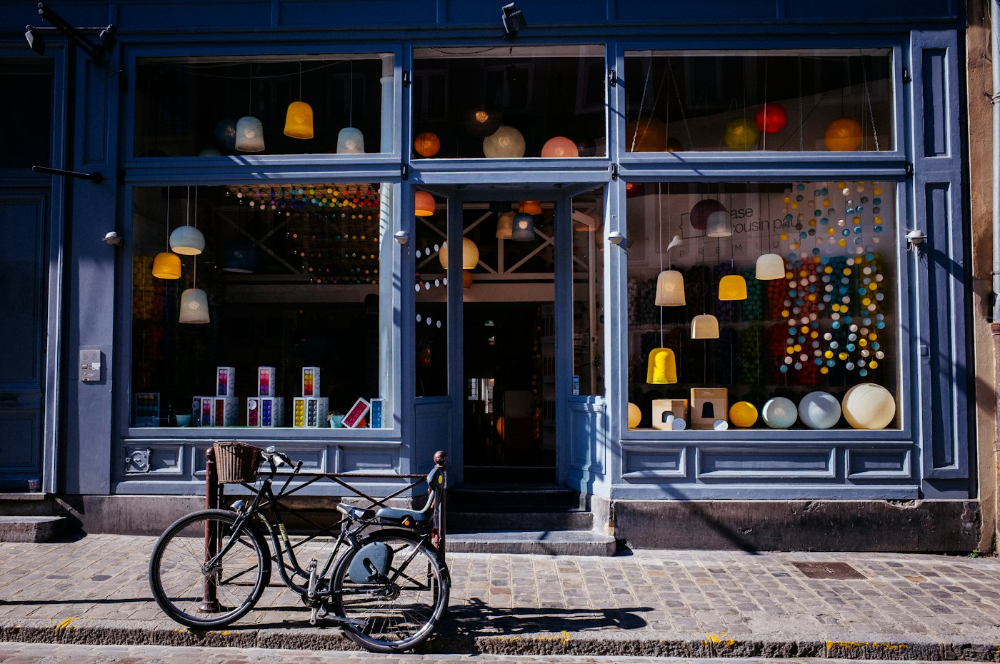

Seu Antônio Lima
Fundador
Abriu a loja em 1996 e ainda escolhe pessoalmente os fornecedores.

Desde 1996 · Jardim das Acácias
Produtos de pequenos fornecedores da região, reposição diária e atendimento de balcão, do jeito antigo.
Seções abastecidas todos os dias e atendimento de quem conhece o produto.
Direto do Ceasa, toda madrugada.
Cortes na hora, do jeito que você pedir.
Três fornadas por dia.
Fatiados no balcão.
Mais de quatro mil itens.
Geladas para levar.

“Entrega grátis no bairro para compras acima de R$ 80”
Uma loja de família, com funcionários que estão aqui há mais de dez anos.
Fundador
Abriu a loja em 1996 e ainda escolhe pessoalmente os fornecedores.

Caixa e atendimento
Conhece pelo nome quase todos os fregueses do bairro.

Gerente
Filho do fundador, implantou as entregas e o pedido pelo WhatsApp.
Válidas de segunda a domingo ou enquanto durar o estoque.
Entregamos no bairro e em seis regiões vizinhas. Consulte o seu endereço pelo WhatsApp.
Dinheiro, Pix, cartões de débito e crédito, e vales Alelo, Sodexo, Ticket e VR.
Sim. Trocamos em até sete dias, com a nota ou o comprovante do pedido.
Não. Para compras acima de R$ 80 a entrega é gratuita; abaixo disso, a taxa é de R$ 6.
Estacionamento próprio e atendimento todos os dias. Ou peça sem sair de casa.
Rua das Acácias, 480 — Jardim das Acácias